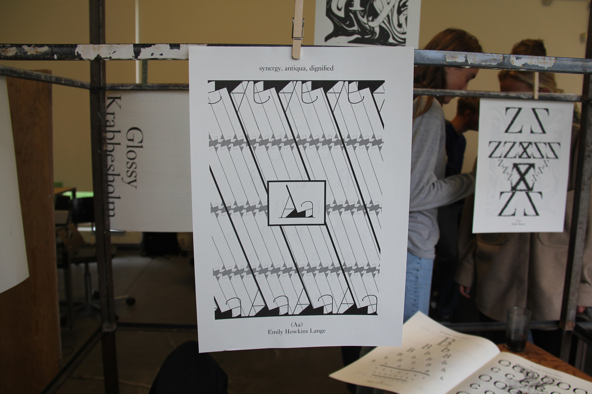
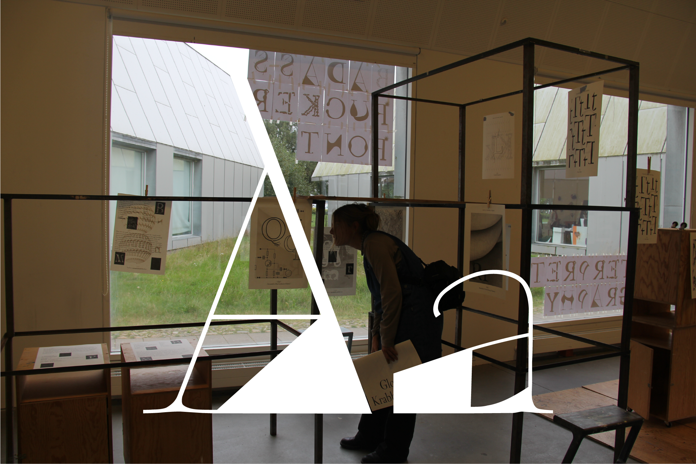
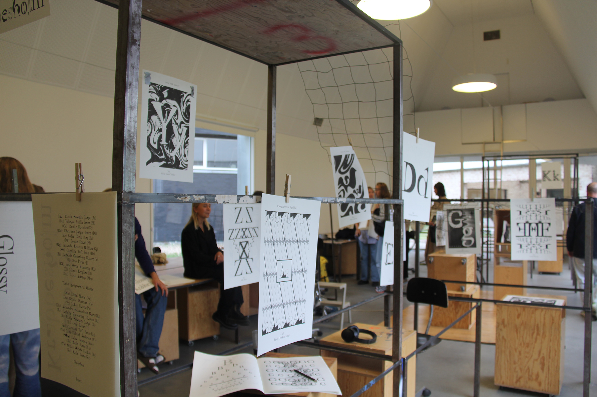
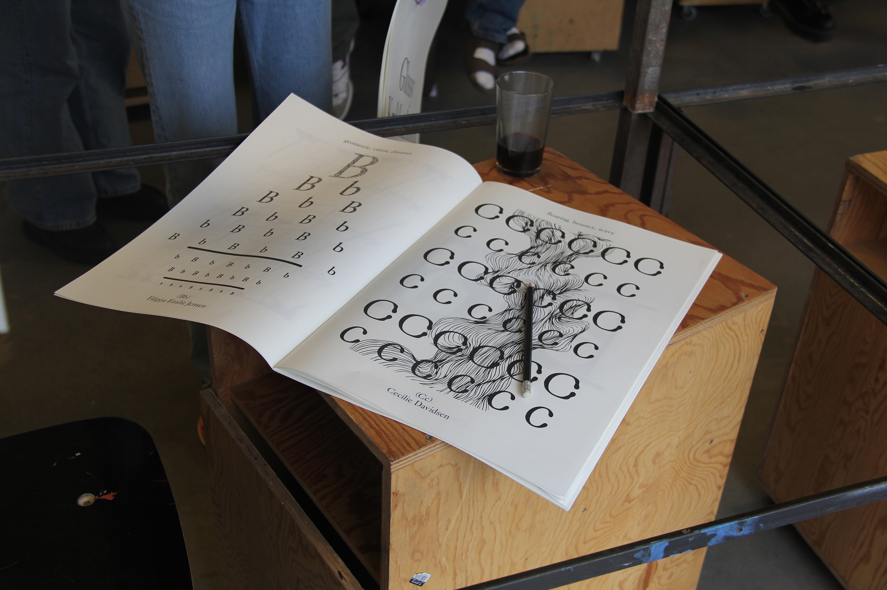
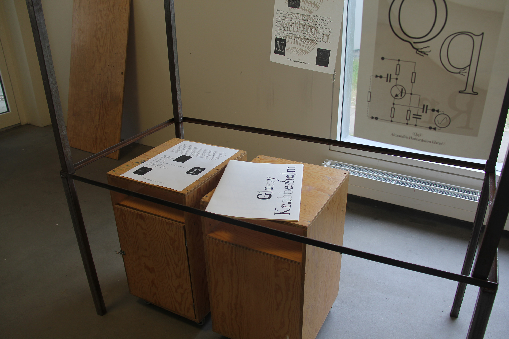
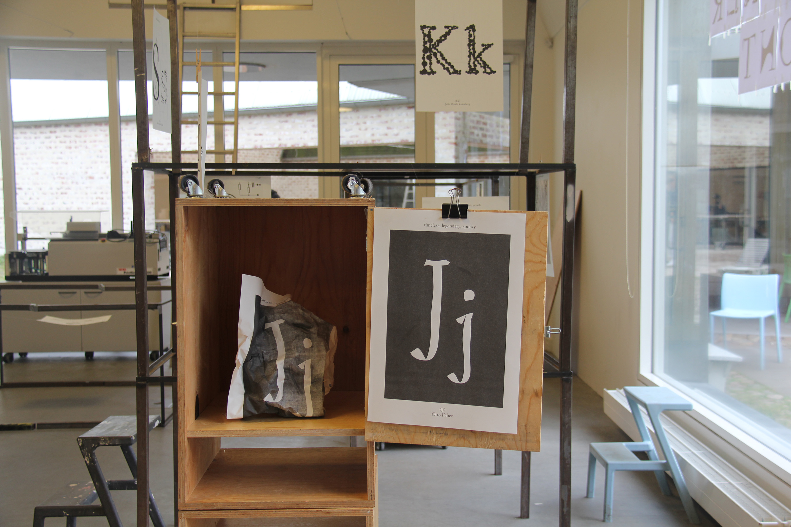

Typographic Kitchen [2021]
In collaboration with Fanfare, an Amsterdam-based graphic design bureau, we created a typography named "GlossyKrabbesholm-Favorit". The letters that I (personally) created, weret those of Aa and Ss. The 'A' was based around the descriptive: "Thin/fat". The uppercase "S" was created around the descriptive: "electric", and the lowercase "s" was created around the descriptive: "scattered". The typography was presented in a spatial exhibition in which we placed the letters around the classroom in a way that allowed people to navigate around the font. The typography was also included in a publication collated by Fanfare.
Download the Glossy Krabbesholm Font,






